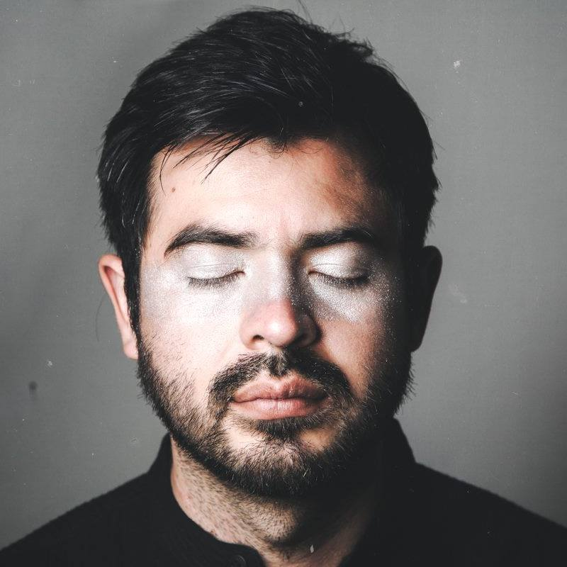

About Me
I am a writer/director born in Mexico City and residing in Berlin Germany since 2012
Born in Mexico, grow up in Cuernavaca, the city of the eternal spring. In college I studied mathematics but instead of 4 years, it took me almost 7 to finish, because of the movies. I spent most of it at the national cineteca, half an hour from the school.
Traveled and lived everywhere: Brazil, Chile, USA, Netherlands and Germany.
In Berlin I started making small films that gradually have become bigger thanks to my friends and collaborators.
